El taqsim
El taqsim (en plural, taqasimb) puede considerarse como la máxima expresión de un maqamb. Un músico de ud, además de conocer una serie de piezas del repertorio árabe e interpretarlas de acuerdo a la expresividad propia su contexto musical, debe ser capaz de improvisar un taqsim en los principales maqamaatb.
En este capítulo, veremos algunas de las particularidades del taqsim como forma musical, detallaremos el proceso de creación que tiene lugar al improvisar e interpretar uno de ellos.
Características y estructura
Un taqsim es una pieza improvisada, interpretada por un único instrumentista. Puede acompañarse de percusión, en cuyo caso tiene una estructura rítmica y una métrica definida, pero por regla general no existe acompañamiento rítmico y se trata de una pieza sin métrica.
El taqsim es la realización más pura de un maqamb, que se materializa a través de un instrumento concreto (con una sonoridad y timbre particulares, unas posibilidades de ornamentación, etc.) y del talento particular de un intérprete (con su dominio del instrumento, su técnica, su sensibilidad, etc.).
A pesar de su libertad rítmica y formal, un taqsim tiene un desarrollo narrativo (debe «contar una historia»).
Un taqsim clásico responde al siguiente esquema:
Una introducción breve que presenta el maqam utilizado. Se emplean frases típicas de comienzo, que permiten al oyente reconocer el maqam en que se va a desarrollar el taqsimb.
Un conjunto de frases en las que se produce el desarrollo del taqsimb. El sayr del maqam define la progresión a lo largo de estas frases.
Un cierre para el que también se utilizan clichés melódicos propios del maqam de partida, que ha de ser también el de finalización.
Funcionalmente, el taqsim se puede entender como una pieza dividida de la siguiente manera:
Presentación del maqamb.
Establecimiento del maqamb. Se enfatiza su estructura y su tónica para que el maqam quede instaurado como fundamento de la pieza.
Desarrollo melódico. Esto implica la creación de frases alrededor de las distintas notas que forman el maqamb, y que van asumiendo el protagonismo y la centralidad en los distintos momentos. Se detalla este aspecto en la sección 1.2.
Despliegue del sayr. Desarrollo de modulaciones según lo habitual para el maqam en cuestión. Por regla general, se pivota sobre el ghammaz del maqamb, después de haber situado dicha nota en el lugar protagonista.
Regreso al maqam original.
Remate y cierre.
La duración de un taqsim puede ser desde un minuto hasta más de diez, sin que existan limitaciones en cuanto a su rítmica o su extensión. El taqsim es una exploración de un maqam que podríamos decir que tiene como únicas limitaciones aquellas que imponga el propio maqam en el que se encuadra, a través de su sayr y de los otros elementos que lo constituyen.
Cada frase de las que forman un taqsim tiene una serie de características, y es el desarrollo de estas el que produce la narrativa del taqsimb. Entre estas características, pueden destacarse las siguientes:
Nota predominante. Cada frase tiene una o varias notas sobre las que gravita el resto de la melodía. Enfatizar ciertas notas permite, asimismo, modular entre ashnas a partir de ellas.
Dirección de movimiento melódico. Puede ser ascendente o descendente. El movimiento de una frase ha de estar en relación con los de las frases que lo preceden o suceden. En general, el taqsim arranca de la nota tónica del maqamb, asciende y modula, y finalmente desciende al maqam original, por lo que las primeras frases acostumbran a tener una dirección ascendente, mientras que las finales son descendentes.
Amplitud. Una frase puede limitarse a unas pocas notas, un yinsb, o bien recorrer todo el maqamb. Este apartado se tratará con más detalle en la sección 1.2.
Ritmo. El taqsim como pieza global no tiene estructura rítmica, y esta puede variar a criterio del interprete en cada frase.
Duración. El taqsim alterna frases cortas con otras más largas. En general, las primeras presentan algún motivo melódico, y este se extiende después en los fragmentos de más duración.
Pausa entre frases. El silencio es un elemento importante de un taqsim, y deben incluirse espacios suficientes entre frases. El efecto dramático de los silencios es una característica fundamental del taqsimb.
Cierre. Las frases se cierran con un remate, conocido como qafla, que ha de crear sensación de reposo, y que suele situarse sobre la nota tónica o alguna de las notas relevantes del maqamb. De especial relevancia es el remate final del taqsimb, que concluye siempre sobre la nota tónica del maqam. En la sección 1.5.2 veremos en detalle la forma en que estos remates aparecen en un taqsimb.
El improvisador de un taqsim debe buscar que esa narrativa tenga una continuidad y un flujo adecuado, al tiempo que debe incluir el suficiente contraste entre las distintas frases como para aportar interés.
El empleo de los anteriores elementos varía según el estilo musical, según lo explicado en el apartado [estilos]. Así, en el estilo árabe las pausas entre frases suelen ser más largas y los cierres más resolutivos (el que culmina el taqsim suele tener un carácter en ocasiones casi épico), con el fin de lograr un efecto dramático. En el iraquí, sin embargo, las pausas son mucho más breves y las resoluciones más discretas, lo que contribuye al carácter más intimista que caracteriza a este estilo.
Yins vs maqam como marco para la improvisación
Se mencionó en el capítulo anterior que la modulación entre los distintos maqamaat podía entenderse como un recorrido entre una serie de ashnasb, en lugar de una sucesión de maqamaatb. Esta concepción se extiende también a la manera en que se lleva a cabo la improvisación en un taqsimb, ya que en su desarrollo deben ser fundamentalmente esos ashnas quienes vayan guiando las frases y la forma que estas van tomando.
La improvisación, entendida dentro de un marco tal como el del blues o el jazz, o en líneas generales dentro del contexto de la música occidental, se desarrolla sobre una escala. Es decir, sobre todas sus notas, que se recorren en toda su amplitud, incluso a lo largo de más de una octava. Este es un enfoque que debe evitarse en la improvisación de un taqsimb, a riesgo de que las frases suenen de una manera que no es natural dentro del contexto de la música árabe.
Aunque pueden aparecer frases de mayor amplitud o que recorren un rango de notas más extenso, la mayor parte de las frases de un taqsim deben construirse alrededor de las notas de un único yinsb. Esto es, tomando una de ellas como «foco» y construyendo la idea melódica con las inmediatas, en las que debe recaer el peso de la melodía. A partir de ahí, hacer avanzar el desarrollo melódico, desplazando el foco a otras notas y modulando a otros ashnas según se comentó en la sección [modulacion].
En otras palabras, es el yins el que provee el vocabulario para la idea melódica, no el maqam al completo. El maqam proporciona un contexto melódico más global y da sentido al yins como parte de aquel. O visto de otra manera, ese vocabulario se construye por adyacencia, con las notas inmediatas, y no simplemente por el hecho de que las notas pertenezcan al conjunto de ellas que forman el maqamb.
Veámoslo con un ejemplo. Imaginemos un taqsim en maqam Rast en do. Su primer yins es yins Rast, y será en él donde comience el desarrollo melódico. Al cabo de unas frases, se alcanzará el ghammaz (sol), y el desarrollo melódico continuara en el segundo yins del maqam (yins Rast en sol). A partir de ahí se puede continuar hacia la octava superior, o se puede llevar a cabo una modulación sobre ese segundo yinsb.
Supongamos que se da una modulación y se utiliza el yins Hiyaz en sol. Es decir, el maqam sería entonces maqam Suznak, pero ese nuevo maqam queda definido de una manera implícita, porque la improvisación seguirá centrada alrededor de esas notas de la segunda mitad del maqamb, ahora formadas por el yins Hiyaz.
La modulación entre dos maqamaat como Rast y Suznak no consiste en sustituir un marco melódico de siete notas por otro con otras siete notas y desde ese momento utilizarlas todas ellas, como podría ser el caso, por ejemplo, en una modulación de una tonalidad mayor a una menor en una pieza de música occidental. Se trata más bien de cambiar ese segundo yins cuando el desarrollo melódico está centrado sobre él, y continuar con el foco melódico en esa misma «zona». Sucesivas modulaciones seguirán un esquema similar, y de igual modo se hará para regresar finalmente al maqam original y a su primer yinsb.
Una vez más, la mejor ayuda para entender este enfoque de la improvisación es escuchar diversos taqasim e intentar «seguir» su flujo. Con el tiempo, se acabará interiorizando la sonoridad y el tipo de recorrido melódico que caracteriza al taqsim como forma musical.
Acerca de la improvisación
Es un hecho que la improvisación no puede enseñarse de la misma manera que otros elementos de la interpretación musical. Es asunto lleno de elementos subjetivos, y en el que es el propio intérprete el que debe inferir parte de su mecanismo por sí mismo. Sin embargo, la reticencia o miedo que se tiene muchas veces a la hora de aprender a improvisar está motivada por una falsa mística, o por la idea equivocada de que la improvisación es puramente un talento innato, y no uno que puede desarrollarse y que posee unas reglas y mecanismos bien definidos.
Todo el mundo es capaz de improvisar. De hecho, todo el mundo improvisa y crea cuando mantiene una conversación, porque en esta no hay un guion escrito y es en el momento mismo de hablar que se eligen las palabras y frases, las expresiones y gestos.
La música, siendo un lenguaje, sigue un proceso similar cuando de improvisación se trata. A partir de un conocimiento de este lenguaje y de un mensaje a transmitir, se crea un discurso en el momento mismo de ejecutarlo.
Pensemos en la siguiente situación, a la cual, con más o menos arte, cualquiera puede hacer frente: contar de memoria un cuento clásico. Partimos de una historia conocida por todos (sea, por ejemplo Caperucita Roja), de la cual se saben sus ideas principales (quiénes son los protagonistas, el comienzo y final del cuento, las acciones principales que suceden, etc.), y sobre esto se completa el desarrollo de la historia. El conocimiento del idioma y la soltura que tenemos en este nos permite crear un conjunto de frases que «arman» el cuento en base a ese puñado de conceptos que son los que contienen su esencia.
Las palabras con las que contamos el cuento son en su gran mayoría improvisadas, y cambiarán si lo contamos de nuevo más adelante. Sin embargo, hay frases o pasajes que repetiremos literalmente, y que no son fruto de la improvisación. Por ejemplo, en el caso particular de nuestra Caperucita Roja, es seguro que emplearemos la frase «para comerte mejor». Hay otras formas de expresar esa idea, pero es esa la que debemos utilizar, porque es la manera de hacerlo que está acorde con la tradición de esa historia.
Lo mismo sucede con el inicio (es probable que nuestra versión del cuento empiece con «Érase una vez...» o alguna fórmula parecida) y el final («Colorín colorado...»). En el taqsimb, su arranque y conclusión son también dos puntos donde se suelen emplear fórmulas preexistentes. Esto permite dar tanto un arranque sólido como un final convincente a la pieza, algo que sería más difícil lograr si también se improvisaran las frases a tocar en esos puntos tan importantes.
Estos fragmentos conocidos, ya sean al inicio o final del taqsimb, o bien en su desarrollo intermedio, vienen aportados por el maqam y las propias características de la música árabe (sus peculiaridades de desarrollo melódico, su sonoridad, etc). En ese marco, el interprete «rellena» el resto del contenido y con ello da forma a un taqsimb. Y entre las notas que toca, añadirá patrones conocidos que el oyente podrá reconocer y que habrá escuchado a otros intérpretes.
Es decir, que la improvisación no un proceso completamente libre en el que se crea una melodía a partir de la nada. En realidad, los elementos fundamentales ya están definidos, y no se trata más que de darles una forma tangible y una estructura, sirviéndose para ello de un conjunto de frases existente, así como de unas «reglas» que permiten crear nuevas frases que encajen en la sonoridad del taqsimb, y que el intérprete ha interiorizado a base de experiencia y exposición previa. Con la particularidad, eso sí, de que ese trabajo se ha de hacer de manera inmediata, según se toca el taqsimb.
Se requiere, por tanto, conocer el maqam y sus pormenores (notas que lo componen, modulaciones habituales, etc), saber cómo trasladar todo ello al ud, y tener la soltura suficiente como para poder llevarlo a cabo de manera espontánea. Lo primero se logra con el simple estudio, y lo último mediante la práctica y la escucha y análisis de otros taqasimb.
Contar bien un cuento en el supuesto anterior depende, entre otros aspectos, de cómo sepamos construir las frases, del arte que se tenga a la hora de añadir información adicional para hacerlo más interesante, o de la expresividad con la que lo narremos. Es decir, del contenido que creemos sobre esas premisas iniciales y de cómo sea la interpretación.
En el taqsimb, su calidad la define el talento a la hora de «componer» las frases que lo forman (a partir del conocimiento del maqam y del vocabulario del que disponemos, no desde cero), la capacidad de desarrollar un arco narrativo dentro del patrón del maqamb, así como la elección acertada de la ornamentación, que es la que aporta la expresividad narrativa.
El entrenamiento de la improvisación
La improvisación, al igual que la interpretación de obras ya escritas, se mejora a base de trabajo. En este caso, a base de tocar taqasimb.
Sin embargo, antes de llegar a ser capaz de improvisar un taqsim completo, es necesario progresar de manera sistemática, trabajando elementos más asequibles. E incluso una vez que se tiene la soltura y conocimiento suficientes, sigue siendo interesante ejercitar la improvisación de esta manera.
Las siguientes son algunas ideas al respecto, sobre las áreas que pueden trabajarse de cara a conseguir improvisar con mayor soltura.
El marco de desarrollo del taqsim es el maqamb, y por ello el conocimiento de este es fundamental. Y puesto que un maqam se subdivide en ashnasb, es conveniente trabajar con estos por separado, como se ha dicho anteriormente. Esto implica conocer los ashnas del maqamb, así como otros a los que sea natural modular como parte del desarrollo melódico esperable para ese maqamb. Se ha de trabajar especialmente la transición entre ellos apoyándose en el ghammaz.
El conocimiento del maqamb, además de teórico, ha de ser sobre todo auditivo. Escuchar taqasim y otras piezas en un determinado maqam es fundamental para interiorizar la sonoridad de este. Al igual que sucede en otros géneros musicales en los que la improvisación es parte importante, la mejor manera de aprender a improvisar es escuchar y transcribir las improvisaciones de otros músicos. Este proceso ayuda a desarrollar el oído y, especialmente, a inferir las figuras y elementos que hacen que esa improvisación suene natural y auténtica. La construcción de un vocabulario que luego utilizar en la improvisación debe formarse especialmente a partir de la escucha de esos fragmentos y la construcción en base a ellos de una interpretación propia de cada cual.
Con esa colección de fragmentos, y una vez aprendidos estos, se trabaja en añadir una continuación (para los inicios) o un desarrollo previo (para los cierres). De esta manera, se sitúa el fragmento en un contexto y se ejercita la habilidad de unir de forma natural una parte improvisada y otra definida de antemano.
Aunque el taqsim es una forma sin ritmo definido, la improvisación sobre una base rítmica es también importante. Sobre una pieza conocida pueden intercalarse secciones improvisadas que utilicen tanto el maqam de la composición como su ritmo.
Por último, no se ha de olvidar que la improvisación no solo se refiere a las notas que se eligen, sino a la manera en que estas se tocan. La ornamentación es tan importante como la propia melodía, y también esta es improvisada y la decide el intérprete «sobre la marcha». Utilizando un fragmento conocido, ya sea propio o tomado de otro taqsimb, podemos trabajar la ornamentación y repetirlo con una expresividad distinta, variando los ornamentos, la articulación de las notas o la propia rítmica.
La repetición
La repetición es un aspecto fundamental de un taqsim y se da a varios niveles diferentes.
En primer lugar, la repetición de notas es un componente imprescindible de un taqsimb, ya que es la manera principal de enfatizar una de ellas, y esto es necesario para establecer la nota tónica del maqam o desplazar el eje melódico a otra nota de relevancia, por ejemplo a la hora de modular a un nuevo maqamb.
En segundo lugar, la repetición de frases es también imprescindible para asentar la narrativa del taqsimb. Utilizando frases y desarrollos melódicos que ya han aparecido antes en otras partes del taqsimb, se logra dotar a este de una estructura. Se evita así que parezca un mero conjunto de notas arbitrarias.
La repetición de frases puede ser:
Repetición literal de una frase. Puede darse inmediatamente (una frase breve repetida varias veces), o bien con una cierta separación. En este segundo caso, es habitual el empezar con el mismo fragmento una frase corta del taqsim y una posterior más larga que desarrolle la idea con mayor extensión. La primera serviría a modo de resumen previo de la segunda.
Repetición de la misma secuencia de notas, con un distinto patrón rítmico.
Repetición del mismo patrón rítmico con una distinta secuencia de notas. Un caso particular de esto es el uso de secuencias melódicas que se transportan a distintas notas iniciales.
Como regla general, un taqsim debe tener algunas «ideas principales» (rítmicas, melódicas, de ornamentación, etc), que se han de repetir y ser fácilmente identificables, y una colección de otras notas que sirvan de amalgama para conectar esas ideas que aparecen a lo largo del taqsimb, y que serán las que se encarguen de darle su identidad y significado.
La rítmica del taqsimb
El taqsimb, como ya se ha mencionado, es una pieza de ritmo libre. Es decir, no existe un marco rítmico global ni una métrica a la que esté supeditado. Sin embargo, ello no quiere decir que el ritmo no sea importante a la hora de tocar un taqsimb. Al contrario, el ritmo es parte fundamental, y el intérprete debe elaborarlo con el mismo cuidado con el que elabora la melodía empleando su conocimiento del maqamb.
Aun si no existe un ritmo base, el taqsim no ha de percibirse como una colección de notas sin estructura rítmica. Cada una de las frases que componen un taqsim debe mostrar o sugerir un «pulso» sobre el que se apuntala.
Una manera de definir este pulso es mediante el uso de una nota pedal de manera regular. El resto de notas de la melodía no han de seguir un ritmo establecido, pero el pedal basta para articular un contexto rítmico suficiente.
El uso de patrones rítmicos que se repiten en distintos puntos es habitual, como se mencionó en el apartado anterior. Los patrones rítmicos ayudan a definir una cierta estructura rítmica local dentro de una frase o parte de esta.
El uso de frases breves predefinidas, que forman parte del vocabulario del intérprete, y que tienen una estructura rítmica clara y suenan más trabajadas, puede combinarse con fragmentos puramente improvisados, carentes de métrica. Buena parte de los principales interpretes de ud clásicos son a su vez importantes compositores, y en sus taqasim puede apreciarse la manera en la que emplean fragmentos más elaborados, no improvisados, y cómo estos contienen su estilo particular.
Las modulaciones que tienen lugar en la melodía del taqsim pueden acompañarse de modulaciones rítmicas para acentuar el efecto que aquellas provocan.
Relacionado con esto, la variación rítmica y el «recorrido» rítmico de un taqsim son herramientas que el intérprete puede utilizar para enriquecer la pieza. Las variaciones rítmicas pueden ser variaciones en la velocidad, en la acentuación, o incluso en la forma de ornamentación empleada.
Por último, es importante, tener en cuenta que la rítmica y la velocidad del taqsim no es la misma en todas sus partes. Mientras que en la sección de inicio, donde se presenta y establece el maqamb, puede tocarse un arranque lento y más pausado, la parte central, donde se da el desarrollo melódico y se producen las modulaciones, debe tener un ritmo más vivaz e intenso.
Inicios y cierres
Por su especial relevancia, es interesante tratar con detalle los fragmentos que se utilizan como inicios o como cierres, ya sea del taqsim como tal, o bien de alguna de sus frases interiores. No daremos aquí un compendio de estos fragmentos, a la manera de una colección de patrones que estudiar, sino una serie de ejemplos para entender la manera habitual en la que estos inicios y cierres se presentan dentro de un taqsimb.
Inicios
La manera más prototípica de empezar un taqsim o una frase dentro de este es simplemente repetir la nota tónica u otra de sus notas a la que se quiera dar relevancia. Habitualmente, se utiliza también la nota tónica en una octava inferior, intercalándola entre las repeticiones de la anterior.
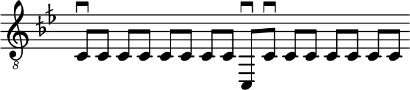
Nótese que las distintas pulsaciones sobre la misma cuerda se hacen con una pulsación alterna, pero tanto la pulsación de la cuerda más grave como la de la nota sucesiva una octava por encima se han de hacer con pulsación descendente. Se aplica aquí el principio de que, siempre que se produzca un cambio de cuerda, la primera pulsación sobre esta nueva cuerda ha de ser en sentido descendente.
En lugar de comenzar directamente con la nota tónica, es habitual llegar hasta ella tras una pequeña frase que presente el yins en cuestión. El siguiente inicio es prototípico en el maqam Bayati:
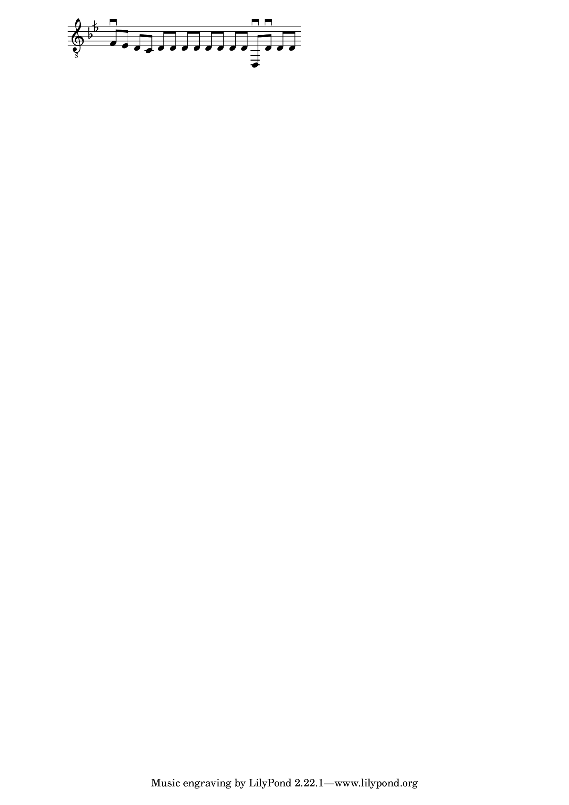
El siguiente es un ejemplo similar en maqam Rast, que en este caso no llega a la tónica sino a la cuarta nota del maqam (fa). Puede emplearse para arrancar una frase intermedia de un taqsimb, en la que quiera enfatizarse esta nota.
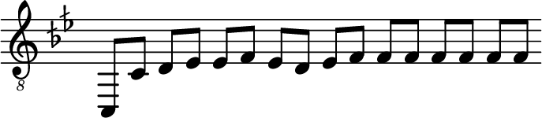
Es frecuente que la frase de apertura utilice las notas por debajo de la tónica, como en el siguiente ejemplo:
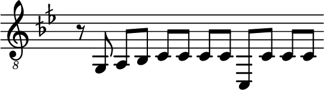
En el caso de maqam Bayati, a pesar de que su segundo yins es yins Nahawand en sol, se suele utilizar en la octava inferior yins Rast en sol (es decir, con si♭½ en lugar de si♭). El siguiente es un ejemplo de arranque en maqam Bayati utilizando notas por debajo de la tónica.
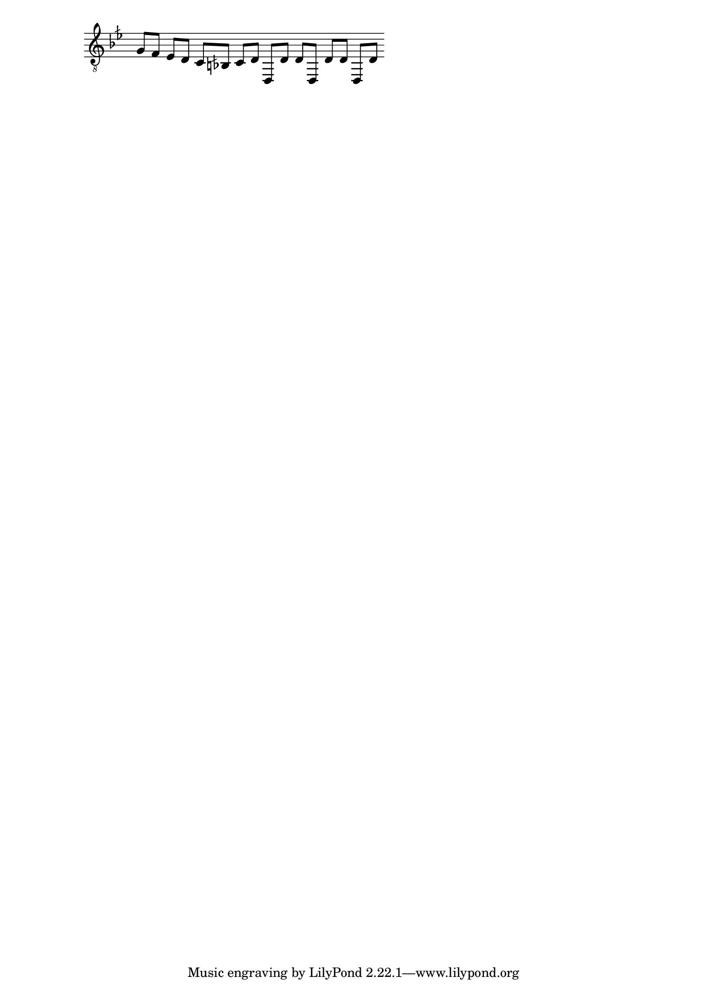
La primera frase de un taqsim suele ser breve y presentar el primer yins del maqam, de tal modo que muchas veces no es apenas más que la combinación de un inicio y un cierre. Véase el ejemplo siguiente:
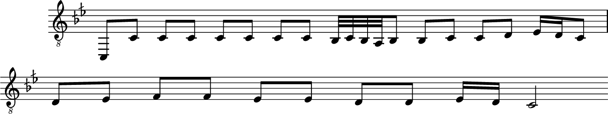
O este otro en maqam Nahawand, más breve, que aun así sirve para indicar con claridad que el taqsim se desarrolla en este maqam:
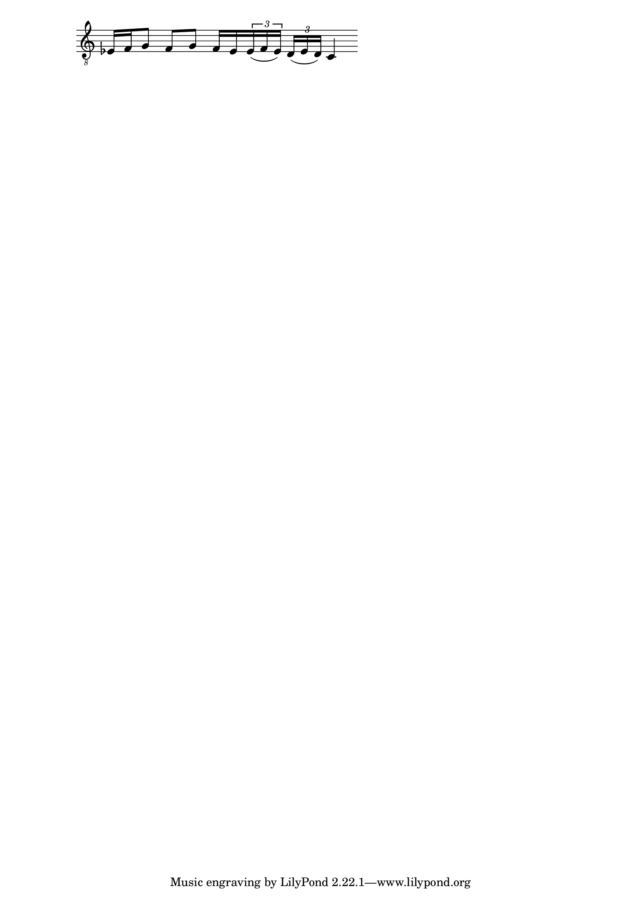
Una técnica muy habitual en un taqsim es tocar una frase breve como las anteriores, formada por un inicio y un cierre, e iniciar la frase siguiente, mas larga, repitiendo el mismo inicio. Esto puede verse en el siguiente ejemplo en maqam Bayati.
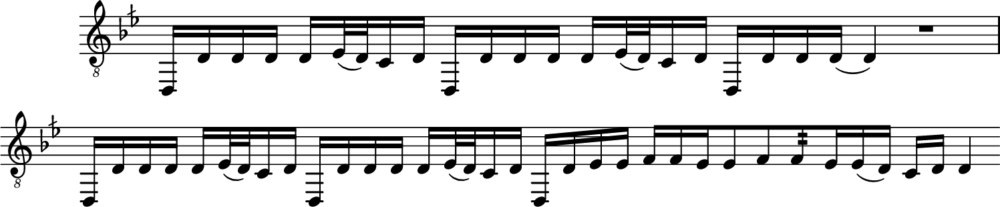
En ocasiones, esa primera frase no contiene un cierre, sino que se deja inconclusa sobre otra nota del maqam, creándose un efecto de tensión que se resuelve cuando la segunda frase arranca. Por ejemplo, en el siguiente ejemplo en maqam Rast, la primera frase se detiene sobre la nota fa.
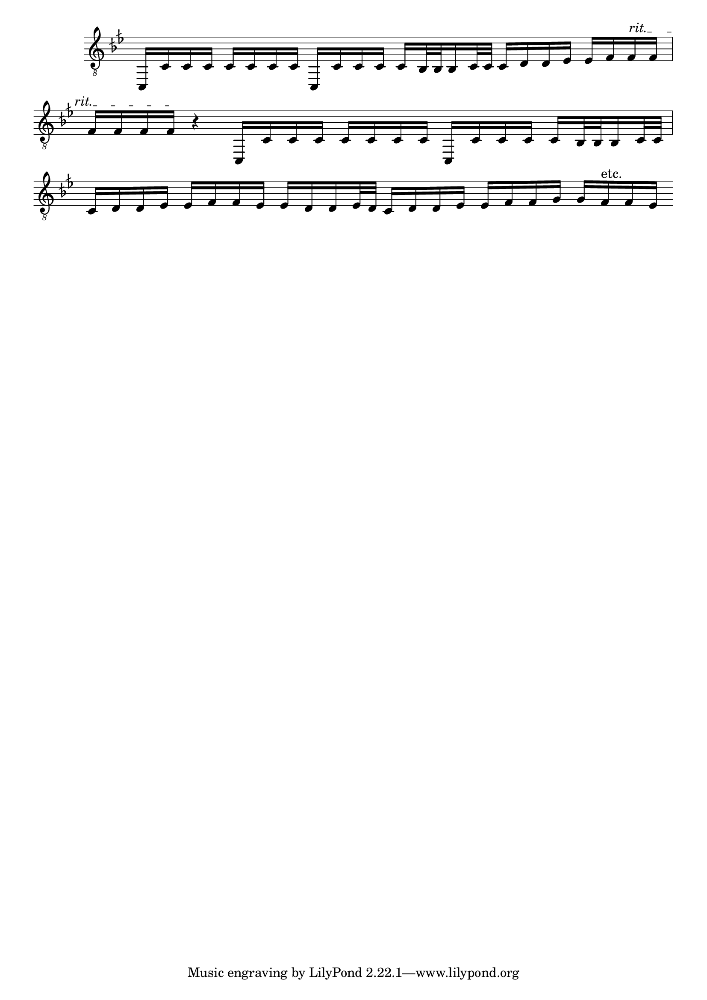
Los inicios anteriores concluyen todos ellos sobre la tónica. Sin embargo, una frase de inicio puede servir para llegar hasta cualquier otra nota del maqamb. Un caso particular son los que arrancan de la tónica y ascienden hasta el ghammaz, para allí dar inicio a una frase que se sitúa sobre el segundo yins. Estos inicios no es habitual utilizarlos para comenzar el taqsimb, sino como arranque de frases intermedias.
Los siguientes son algunos ejemplos:
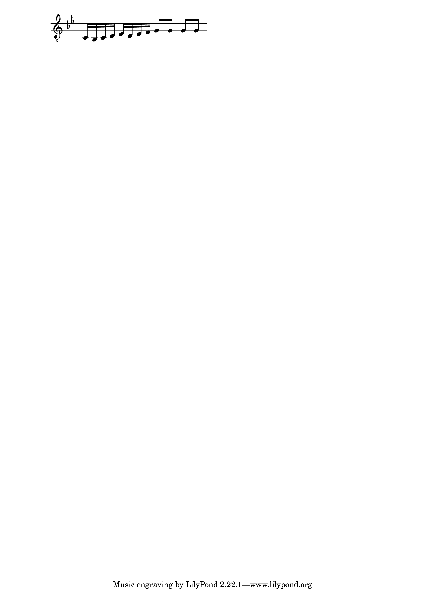
Cualquiera de los inicios de esta sección puede modificarse para desembocar sobre una nota distinta de la tónica o el ghammaz, enfatizando esta y continuando desde allí.
Cierres
Esta sección contiene fragmentos empleados para concluir una frase o un taqsimb, también conocidos como qafla.
Comencemos con una de las opciones más habituales: un descenso a tónica empleando un motivo melódico. Por ejemplo:
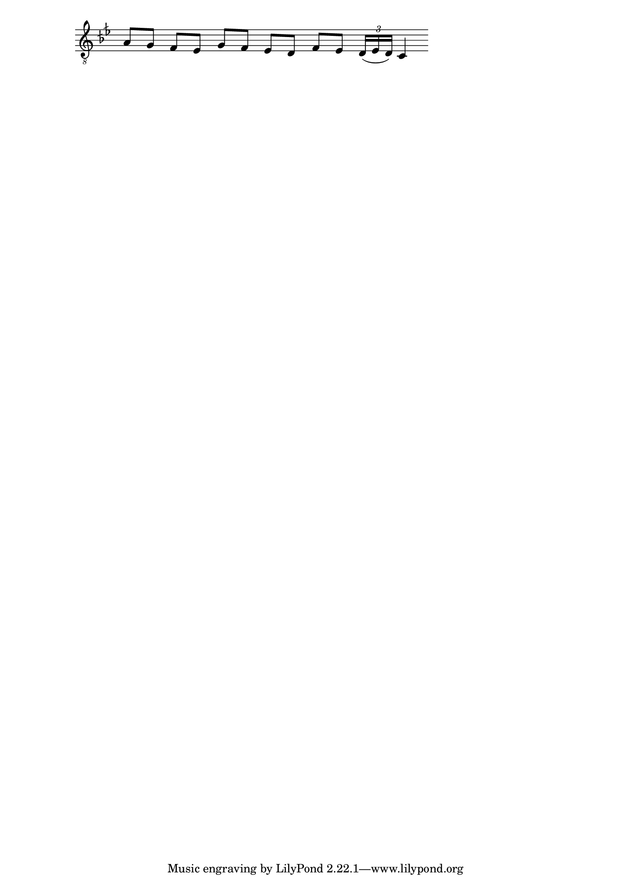
Es habitual que el descenso a la tónica se produzca desde las cercanías del ghammaz o incluso desde la octava, pero si la frase se encuentra cerca de la tónica, puede saltarse hasta una nota superior y comenzar desde allí. Este es uno de los casos en los que aparecen intervalos amplios dentro de la melodía. En el siguiente ejemplo, en el maqam Nahawand, se salta desde la tónica al ghammaz y desde allí se desciende mediante un patrón melódico, al que sigue un cierre con trémolo.
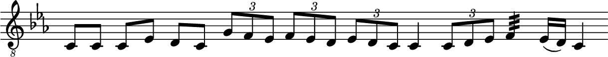
El uso del trémolo para enfatizar un cierre es casi obligado en algunos estilos de ud como el árabe. El cierre más simple con uso de trémolo es un simple descenso a tónica siguiendo las notas del maqamb.
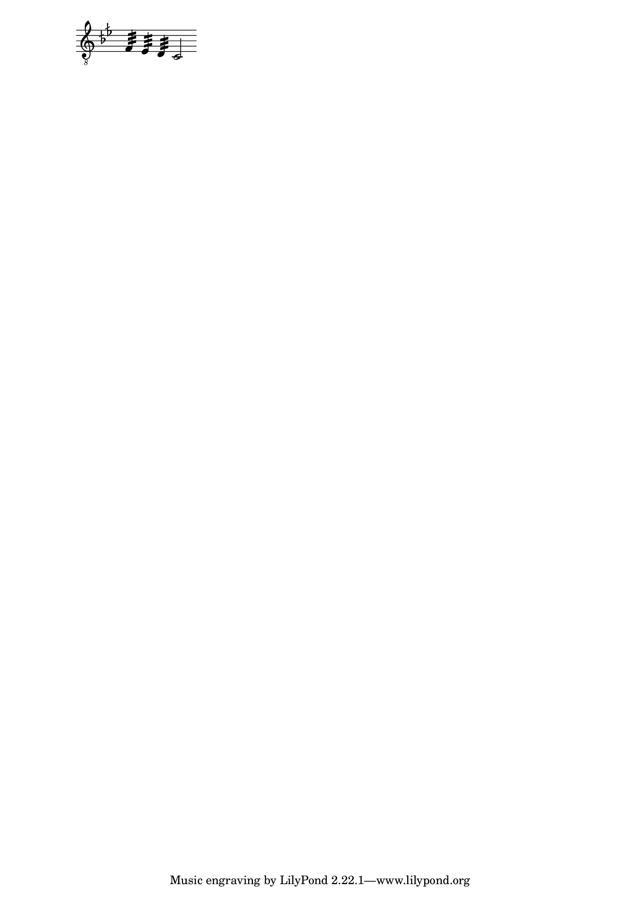
El siguiente cierre combina el trémolo con un motivo melódico:
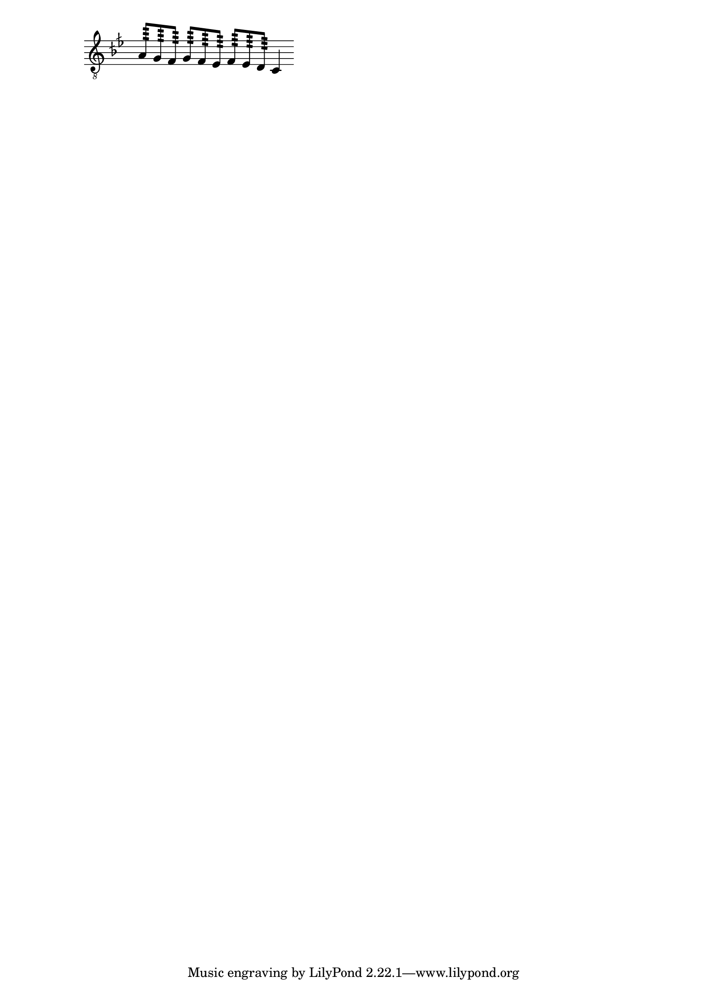
El uso de la tónica una octava por debajo es un recurso frecuente para dar solidez a un remate.
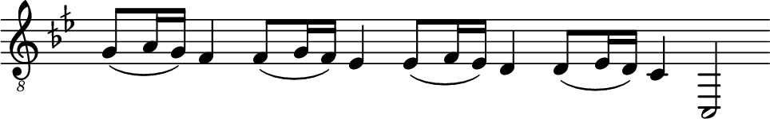
El siguiente ejemplo en maqam Bayati usa octavas y trémolo conjuntamente:
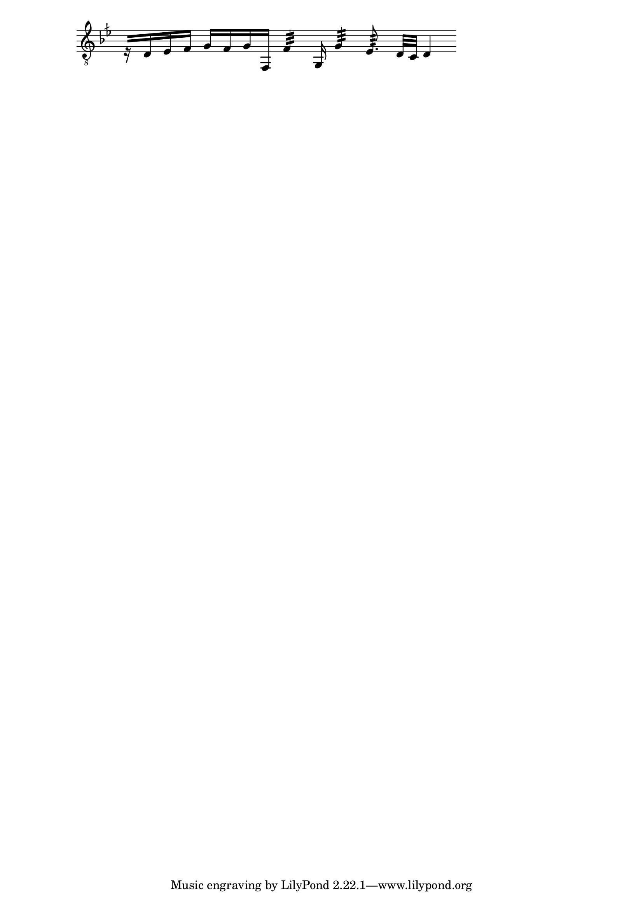
Aun si el patrón es descendente, muchos cierres usan la nota inmediatamente inferior a la tónica como nota sensible desde la que resolver y concluir la qafla, en dirección ascendente. El siguiente es un ejemplo de ello:
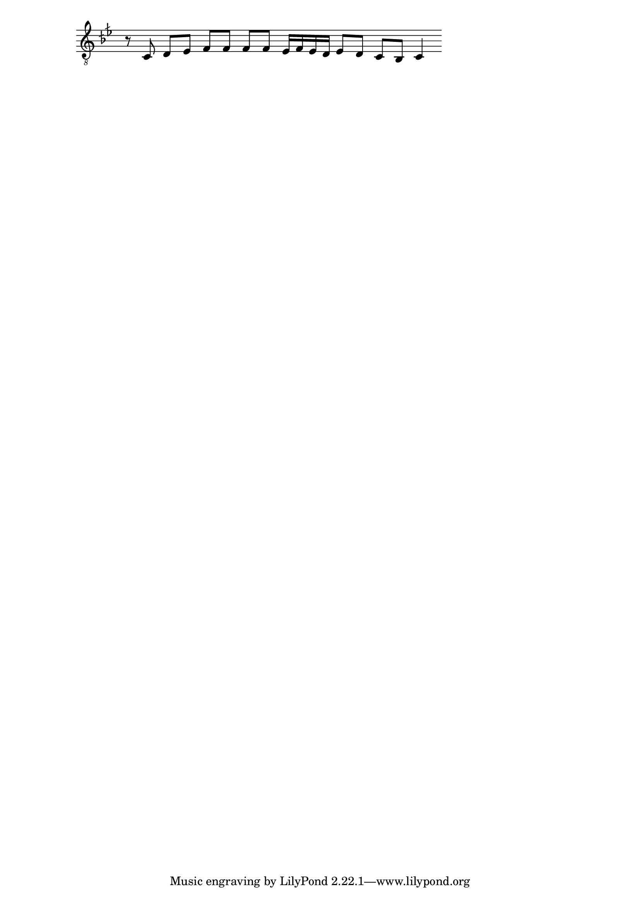
Aunque menos frecuente, también es posible apoyarse en el ghammaz como nota previa antes de la tónica, que luego resuelve sobre esta. El siguiente ejemplo combina esto con el uso de trémolo y octavas.
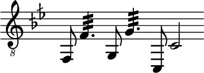
La nota inmediatamente por encima de la tónica, especialmente si se encuentra a un semitono de aquella (como sucede en el maqam Kurd, empleado en el siguiente ejemplo), puede también utilizarse con carácter de nota sensible, deteniéndose en ella y enfatizándola antes de resolver.
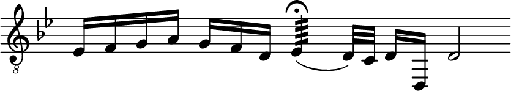
Ampliando esta idea, otra alternativa habitual es llegar a la tónica mediante un motivo melódico ascendente, desde la octava inferior. El siguiente ejemplo combina un patrón melódico descendente que baja a la octava inferior, con otro ascendente que resuelve desde allí sobre la tónica.
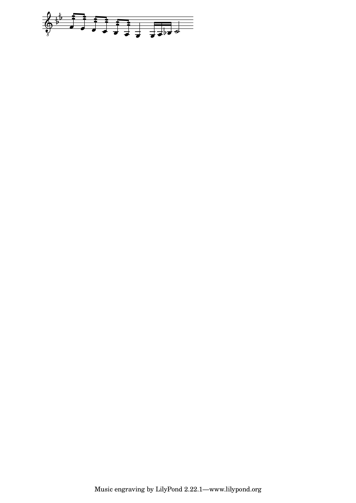
En ocasiones, la qafla tiene dos partes, o más bien se puede decir que se unen dos remates consecutivos, ambos acabando sobre la tónica. Por ejemplo:
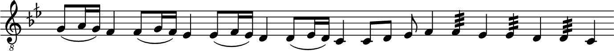
Otro ejemplo similar, en este caso en maqam Nahawand:
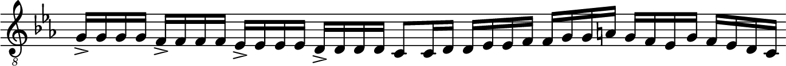
La siguiente frase se emplea con frecuencia como segundo cierre, aunque su carácter es más de ornamentación, y es el cierre previo el que deja la melodía concluida sobre la tónica. Se suele tocar con menos volumen que el de la frase anterior, y es habitual no en el cierre del taqsimb, sino en el de frases intermedias.
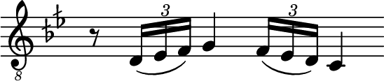
Otro ejemplo más de esta idea:
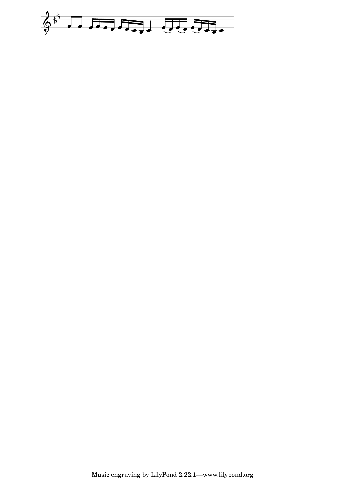
Respecto a la duración de la última nota del remate, lo habitual es dejar esta sonando. Sin embargo, en el cierre de frases interiores de un taqsim pueden emplearse finales secos, tras los que normalmente comienza rápido la siguiente frase. Estos cierres pueden ocurrir sobre la tónica, pero también sobre otras notas del maqamb. Por ejemplo, la siguiente frase en maqam Nahawand se cierra sobre la nota re.
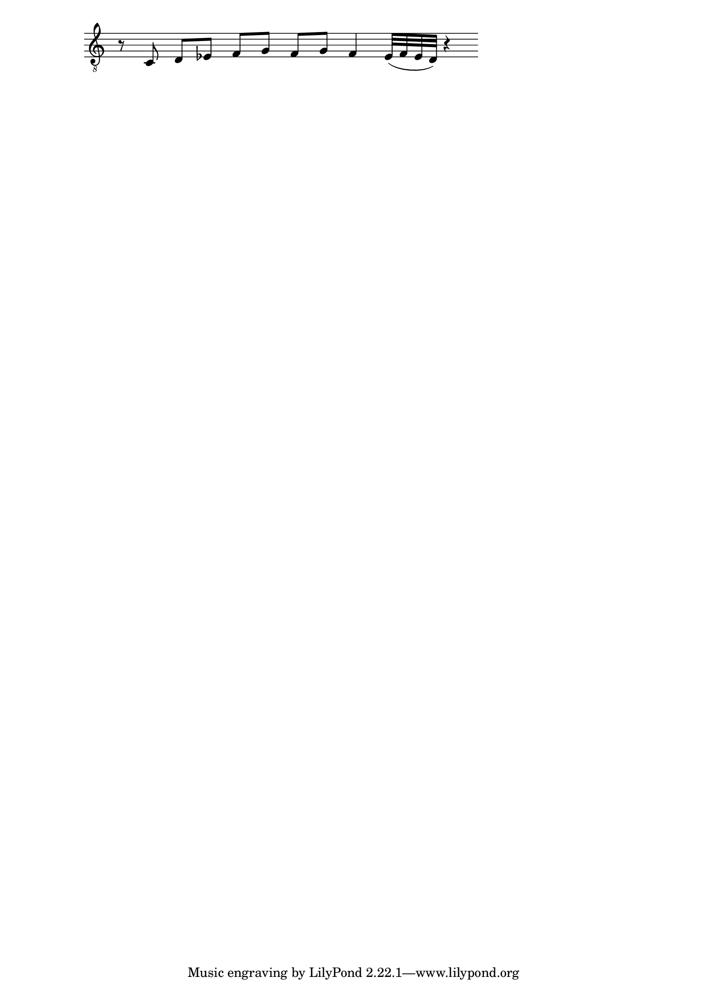
En el estilo árabe, como ya se ha dicho, el cierre que da fin al taqsim ha de ser intenso, con un cierto carácter de apoteosis. Para ello, es necesario que exista una tensión melódica antes de llegar al remate, y esta se debe crear progresivamente en las frases previas. Una forma habitual de hacer esto es recorrer el maqam de manera ascendente con algún patrón melódico, para después descender y concluir sobre la tónica. Por ejemplo:
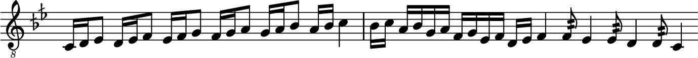
Otra posibilidad sobre esta misma idea:
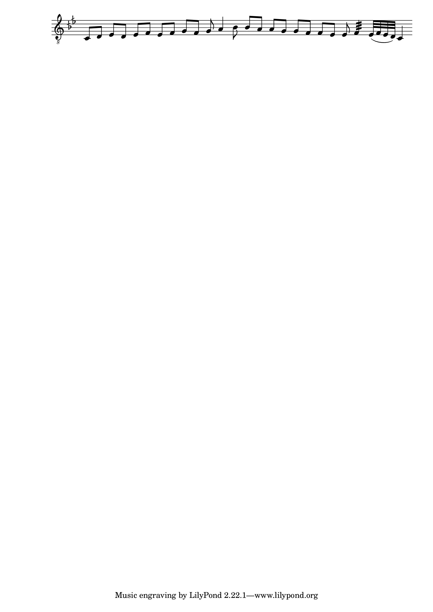
La sección ascendente es frecuente tocarla acelerando el tempo, para así añadir más tensión al desarrollo.